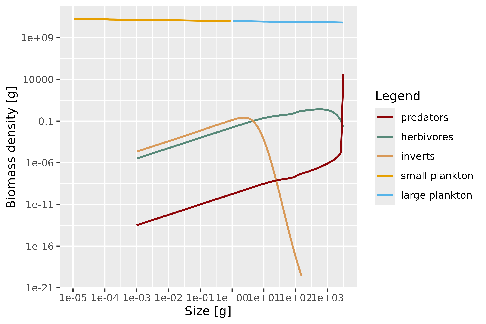
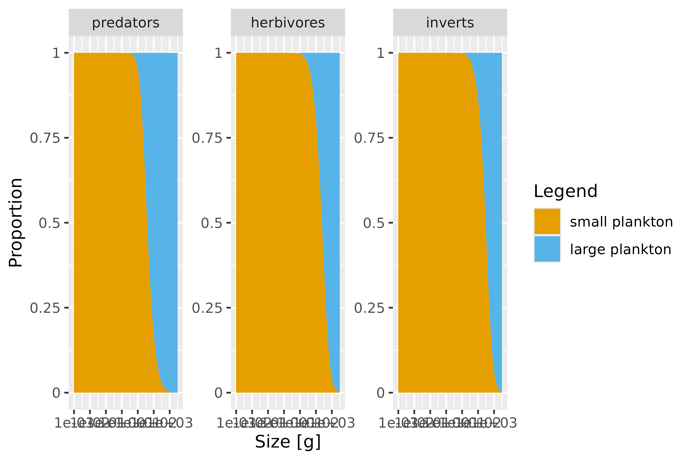
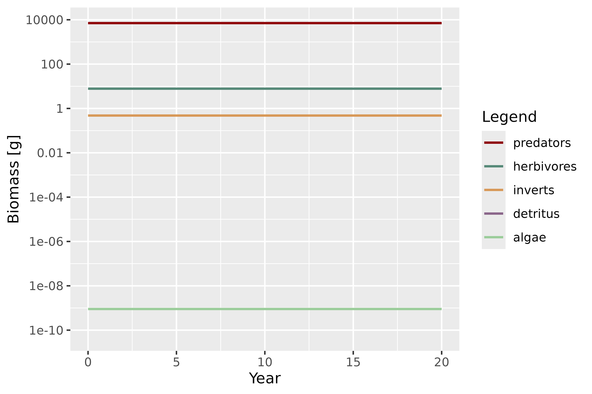

Combining mizerReef with mizerMR: multiple background resources
Source:vignettes/using-multiple-resources.Rmd
using-multiple-resources.RmdOverview
A standard mizer model has a single, size-structured background resource spectrum that represents everything the fish community feeds on but which is not itself resolved as a dynamic species. mizerReef keeps that single resource and adds two unstructured benthic components on top of it — algae and detritus — so that herbivores and detritivores have somewhere to feed.
Sometimes one lumped planktonic resource is too coarse. Different parts of the community may rely on ecologically distinct pools of prey that occupy different size ranges and replenish at different rates. The mizerMR extension package solves exactly this problem: it replaces the single background resource with any number of independent, size-structured resource spectra, and lets each predator species have its own preference for each resource.
Because both packages are written as mizer extensions, they compose. This vignette shows how to:
- Load both extensions and understand what the combined model class means.
- Split the reef’s background resource into several size-structured resources.
- Give species different resource preferences with an interaction matrix.
- Retune the steady state and explore the results.
We assume you have read vignette("mizerReef") and are
comfortable with the basic reef workflow. Familiarity with
vignette("guide-use-extension-packages", package = "mizer")
is helpful but not required.
Loading both extensions
Install mizerMR alongside mizerReef if you do not have it yet:
# install.packages("remotes")
remotes::install_github("sizespectrum/mizerMR")Then load both packages. Each mizer extension announces itself to mizer when it is loaded, building up an extension chain. The package you load last sits at the front of the chain.
getRegisteredExtensions()
#> mizerMR mizerReef
#> "sizespectrum/mizerMR" "sizespectrum/mizerReef"Both extensions are now active. mizerReef ships an example model for
a generic three-group Caribbean reef, caribbean_3_model,
with functional groups for predators, herbivores and invertebrates:
params <- caribbean_3_model
class(params)
#> [1] "mizerReef"
#> attr(,"package")
#> [1] ".GlobalEnv"The object carries the mizerReef class, so all of
mizer’s generics (project(), plotSpectra(),
getBiomass(), …) dispatch to mizerReef’s methods. It has a
single background resource plus the reef’s algae and detritus
components:
names(params@other_params)
#> [1] "include_sen_mort" "refuge_params" "ext_mort_params" "algae"
#> [5] "detritus" "new_refuge"Splitting the background resource
In the example model, predators feed mostly on the size-structured background resource (think planktonic and small pelagic prey), while herbivores and invertebrates take a smaller share of it in addition to algae and detritus:
sp <- species_params(params)
data.frame(species = sp$species,
interaction_resource = sp$interaction_resource,
interaction_algae = sp$interaction_algae,
interaction_detritus = sp$interaction_detritus)
#> species interaction_resource interaction_algae
#> predators predators 1.0 0
#> herbivores herbivores 0.2 1
#> inverts inverts 0.2 0
#> interaction_detritus
#> predators 0
#> herbivores 0
#> inverts 1Suppose we want to distinguish two planktonic pools: a small
plankton resource that dominates the smallest sizes and a
large plankton resource that carries the larger prey.
mizerMR describes each resource with one row of a
resource_params data frame. The important columns are the
coefficient (kappa) and exponent (lambda) of
the carrying-capacity power law, the size range (w_min,
w_max), and the replenishment rate (r_pp,
n). Any column you leave out is filled with a sensible
default (see mizerMR::validResourceParams()).
Here we give both resources the same power law that the original single resource used, but restrict each to half of the size axis, so that together they reproduce a continuous background spectrum:
wf <- w_full(params)
resource_params <- data.frame(
resource = c("small plankton", "large plankton"),
kappa = 1e11,
lambda = 2.05,
w_min = c(min(wf), 1),
w_max = c(1, max(params@w)),
r_pp = 4,
n = 2 / 3
)
resource_params
#> resource kappa lambda w_min w_max r_pp n
#> 1 small plankton 1e+11 2.05 8.842452e-13 1 4 0.6666667
#> 2 large plankton 1e+11 2.05 1.000000e+00 3125 4 0.6666667setMultipleResources() installs these resources into the
model. It silences the built-in single resource and takes over the
resource dynamics, while leaving mizerReef’s algae, detritus and refuge
machinery untouched:
params <- setMultipleResources(params, resource_params = resource_params)The returned object now belongs to a class that chains both extensions:
class(params)
#> [1] "mizerMR"
#> attr(,"package")
#> [1] ".GlobalEnv"
is(params, "mizerReef")
#> [1] TRUE
is(params, "mizerMR")
#> [1] TRUEclass() reports the most-derived class,
mizerMR, but the object still inherits from
mizerReef, so reef generics and multiple-resource generics
both dispatch correctly. The multiple resources live in a new
"MR" component:
names(params@other_params)
#> [1] "include_sen_mort" "refuge_params" "ext_mort_params" "algae"
#> [5] "detritus" "new_refuge" "MR"
dimnames(initialNResource(params))$resource
#> [1] "small plankton" "large plankton"Giving species different preferences
So far both resources are eaten in the same proportions as the original single resource. The real payoff of multiple resources is that each species can prefer different ones. This is controlled by a resource interaction matrix with one row per species and one column per resource.
Let us say predators chase the larger planktonic prey, while herbivores and invertebrates graze mostly on the small pool:
resource_interaction <- matrix(
c(0.2, 1.0, # predators: small, large
0.2, 0.05, # herbivores
0.3, 0.05), # inverts
nrow = 3, byrow = TRUE,
dimnames = list(sp = sp$species,
resource = resource_params$resource)
)
resource_interaction
#> resource
#> sp small plankton large plankton
#> predators 0.2 1.00
#> herbivores 0.2 0.05
#> inverts 0.3 0.05Note the names on the two dimensions (sp and
resource): mizerMR checks that the matrix matches the
species and resources of the model, so it is worth labelling both axes.
We pass the matrix straight to setMultipleResources():
params <- setMultipleResources(
params,
resource_params = resource_params,
resource_interaction = resource_interaction
)
resource_interaction(params)
#> resource
#> sp small plankton large plankton
#> predators 0.2 1.00
#> herbivores 0.2 0.05
#> inverts 0.3 0.05Retuning the steady state
Changing the resources moves the model away from its previous steady
state, so we retune it. mizerReef’s reefSteady() works
exactly as it does for an ordinary reef model — it is unaware that the
background is now several resources, because the multiple-resource
dynamics are handled transparently by mizerMR’s methods further down the
chain. A couple of iterations are usually enough:
params <- reefSteady(params)
params <- reefSteady(params)Exploring the results
Every reef and multiple-resource plotting function now works on the
combined model. plotSpectra() shows the fish community
together with the two background resources, which tile the size
axis:
plotSpectra(params, biomass = TRUE, per_log_size = TRUE)
The diet composition resolves the two resources separately, so you can see the ontogenetic shift between them. Predators lean on large plankton, while the smaller-bodied groups take the small-plankton pool (alongside algae and detritus):
plotDiet(params)
Biomasses of the fish groups and of the unstructured algae and
detritus components are reported by getBiomass() as before.
The size-structured multiple resources are not folded into the species
biomass table; they are reported through the resource accessors
instead:
sim <- project(params, t_max = 20)
getBiomass(sim)[c(1, 21), ]
#> Biomass (2 times x 5 species) [g]
#> sp
#> time predators herbivores inverts algae detritus
#> 0 7071.571 7.796413 0.4786376 8.993015e-10 5.870785e-11
#> 20 7072.043 7.794797 0.4785763 8.994825e-10 0.000000e+00
plotBiomass(sim)
How the chaining works
Under the hood, both packages register themselves as dispatching
extensions. mizer builds an S4 class hierarchy in which the
combined object extends mizerMR, which extends
mizerReef, which extends MizerParams:
extends("mizerMR")
#> [1] "mizerMR" "mizerReef" "MizerParams"When you call a generic such as getEncounter() or
getBiomass(), R walks this hierarchy from the outermost
class inward. Each extension’s method does its own work and then calls
NextMethod() to let the next extension in the chain
contribute. That is why the reef’s refuge-modified encounter and the
multiple resources’ encounter both end up in the final rate, and why a
single plotSpectra() call draws the reef community and
every background resource together. Neither package needs to know about
the other; they only need to be polite about calling
NextMethod().
An important caveat: chaining only combines extensions that use the same mechanism
The composability shown above is not automatic just because
two packages both touch mizer models — it works here because
both mizerReef and mizerMR are dispatching
extensions: each registers itself with
registerExtension(), defines an S4 marker class, and calls
NextMethod() inside every method that overrides a shared
generic. mizer still supports an older, simpler mechanism for changing a
single rate calculation:
mizer::setRateFunction(params, "Encounter", "my_fun") swaps
in one named function, with no chaining at all. A params object uses
one mechanism or the other for a given rate, never both:
getEncounter() (and the other rate generics) checks whether
the object has been coerced to a dispatching extension’s class at all,
and if so walks the full NextMethod() chain — a path that
computes the encounter rate directly and never consults
rates_funcs — otherwise it calls the single function named
in rates_funcs$Encounter directly.
A concrete example: therMizer
(temperature effects) modifies the encounter rate via
setRateFunction(params, "Encounter", "therMizerEncounter")
— the older, non-chaining mechanism; it does not register itself as a
dispatching extension. Once mizerReef has coerced a params object to its
own dispatching class (which happens automatically inside
newReefParams()), that object’s encounter rate is computed
by walking mizerReef’s NextMethod() chain, and
rates_funcs$Encounter — including a
therMizerEncounter registration — is never consulted at
all. The reverse is equally true: on an object still carrying the base
MizerParams class, rates_funcs$Encounter runs
alone and mizerReef’s refuge correction never applies. So combining
mizerReef with an extension like therMizer does not currently give you
both effects together — whichever mechanism happens to govern that rate
for the object determines the outcome, regardless of the order the two
were set up in. Getting genuine composition (as demonstrated above for
mizerReef + mizerMR) requires both extensions to be written as
dispatching extensions that call NextMethod() — even then,
if either method skips NextMethod(), the extension loaded
first (further down the chain) is the one that gets
shadowed. Truly composable behaviour across any pair of mizer
extensions, regardless of which mechanism each uses, is still an
evolving part of the mizer ecosystem.
For more on the extension chain — including how the load order is
recorded in the object and restored when you save and reload it — see
vignette("guide-use-extension-packages", package = "mizer").